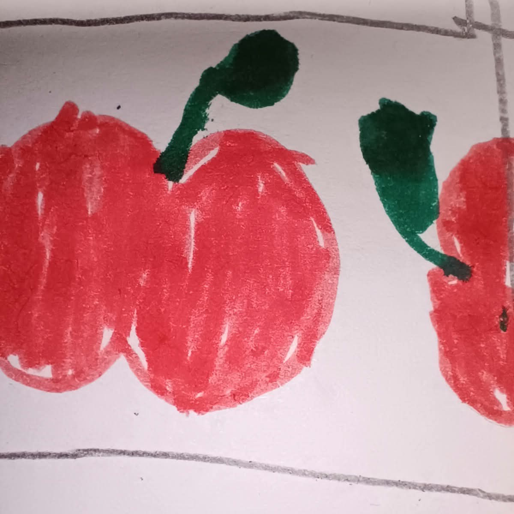
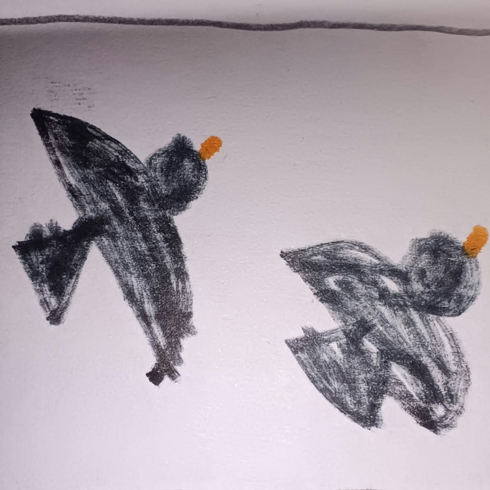
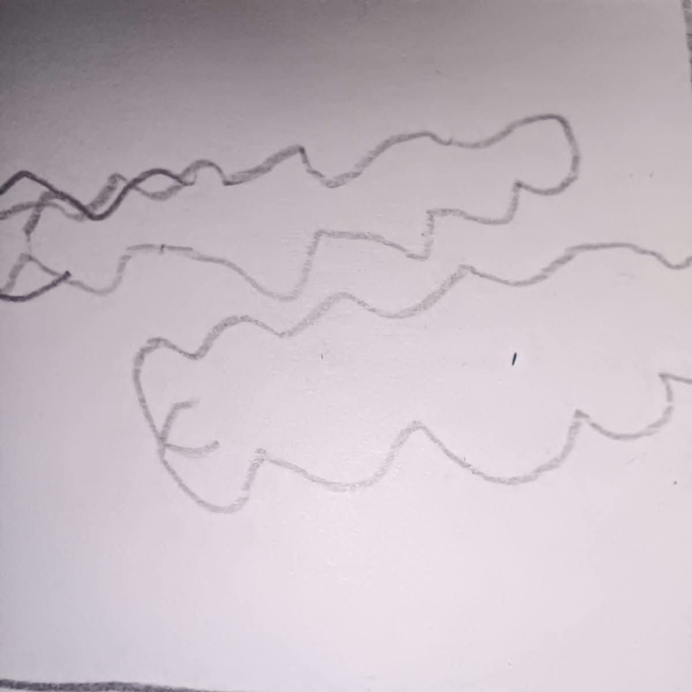
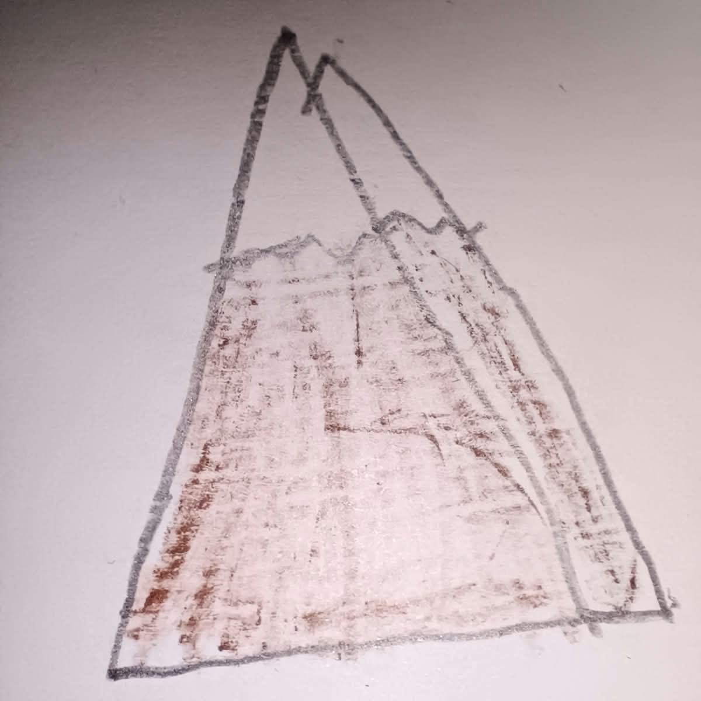
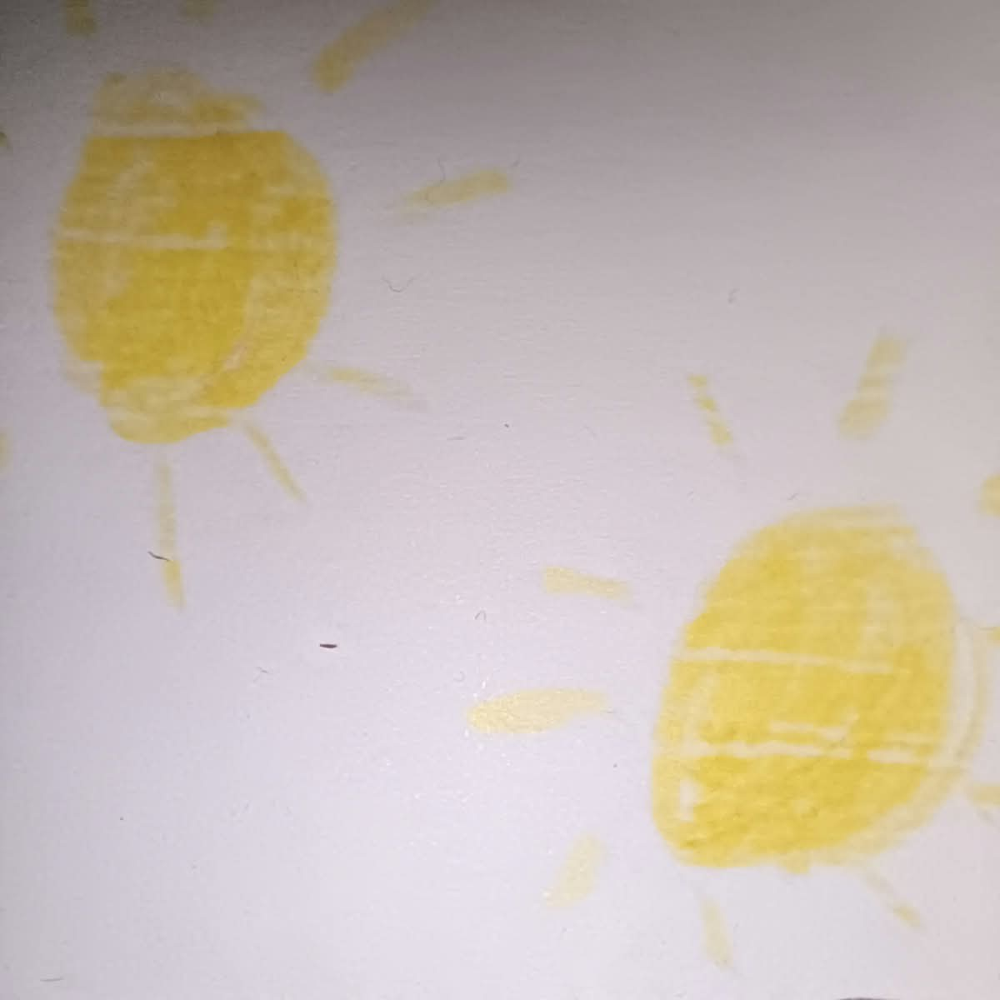
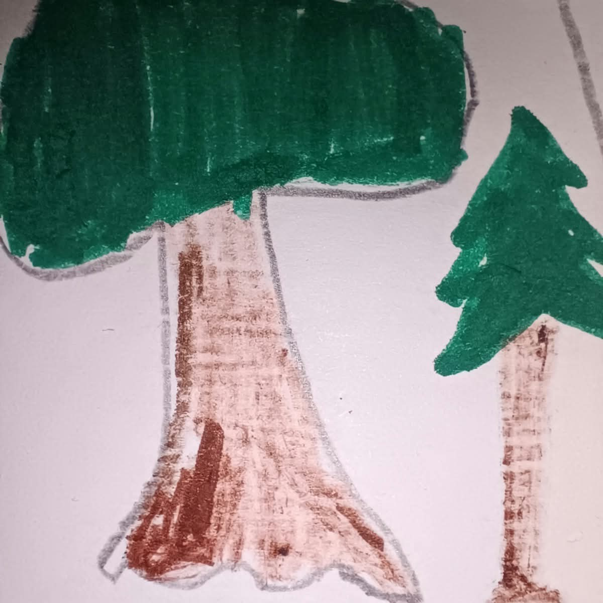

Az alma sokak kedvenc gyümölcse. Vitaminokat és rostot tartalmaz, ezért egészséges tízórai lehet.

A madarak tollas állatok, és tojással szaporodnak. Sok fajuk repülni is tud, de például a pingvin nem képes rá.

A felhők apró vízcseppekből vagy jégkristályokból állnak. Ha sok víz gyűlik össze bennük, eső vagy hó hullhat belőlük.

A hegyek a földfelszín magas kiemelkedései. Tetejükön gyakran hűvösebb van, és a legmagasabb csúcsokat hó boríthatja.

A Nap egy csillag, amely fényt és meleget ad a Földnek. Nélküle nem lenne élet bolygónkon.

A fák gyökérrel, törzzsel és lombkoronával rendelkeznek. Oxigént termelnek, és sok állatnak adnak otthont.

Köszönöm szépen hogy végig olvastad.